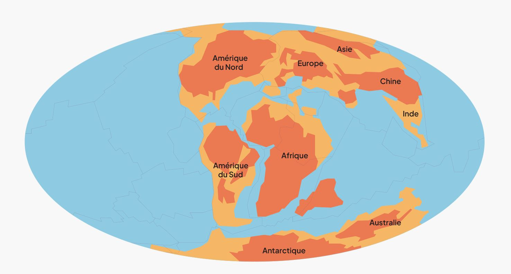
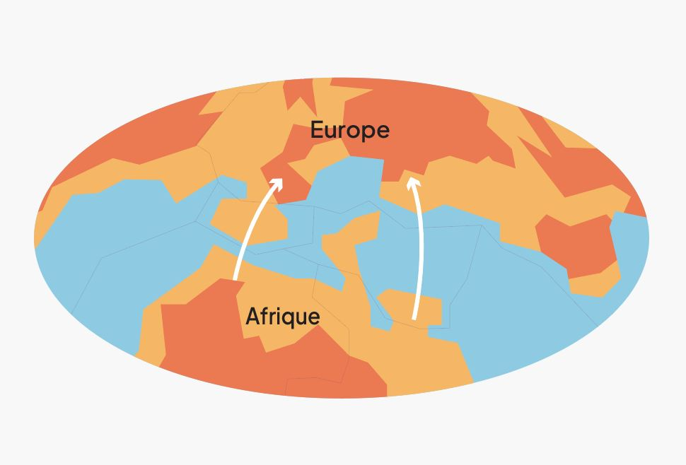

• Du parfait à l’imparfait
Les Alpes : reliques de subduction
Il y a plusieurs centaines de millions d’années, la Terre n’avait rien à voir avec celle que nous connaissons aujourd’hui. La disposition des continents était bien différente, et entre ce qui allait devenir l’Afrique et l’Europe s’étendait un vaste océan : l’océan Téthys. Au fil des époques, les continents se rencontrent et s’écartent de manière cyclique.
Pendant des millions d’années, les fonds de cet océan ont vu s’accumuler des sédiments marins comme de la boue, coquillages, et autres dépôts. Ceux-ci se sont peu à peu transformés en roches, comme les calcaires ou les marnes. Pendant ce temps, au-dessus, les plaques tectoniques, grandes portions de la croûte terrestre en mouvement constant, poursuivaient leur lente mais puissante dérive.

Progressivement, la plaque africaine s’est dirigée vers le nord, en direction de la plaque eurasienne. Ce rapprochement a provoqué la fermeture de l’océan Téthys, dont la croûte océanique a plongé sous la plaque eurasienne. C’était le début d’un long processus de subduction.
L’épitaxie
